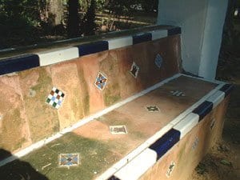
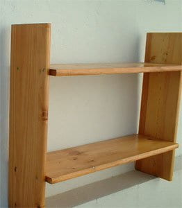
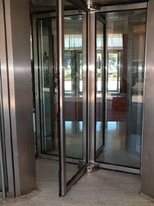

 |
Después del apartado anterior suponemos que ya te irás situando correctamente en el espacio y aprendiendo a diferenciar cómo pueden estar colocadas las rectas y por qué, por ejemplo, las cuerdas para tender de dos vecinas pueden ser paralelas o cruzarse, nunca cortarse pues sino no podrían tender. Pero vamos a dar ahora el salto a los planos.
Quizás a lo largo de tu juventud tuviste que compartir habitación con alguno de tus hermanos e incluso dormir en literas donde los colchones formaban planos paralelos. Si tienes pareja, seguramente compartís el mismo plano, llamémoslo colchón. Y si un día te toca dormir en el sofá te vas a encontrar con dos planos que se cortan en una línea, ese agujero negro donde son absorbidos los pañuelos, monedas, pinzas, tijeras, llaves y cualquier otro elemento que se te escape de las manos o de los bolsillos.
Posición relativa de dos planos

En el espacio, dos planos pueden tener las siguientes posiciones relativas:
Averiguar la posición relativa de dos planos
Para saber la posición relativa de dos planos, a través de sus ecuaciones, basta estudiar el sistema formado por sus ecuaciones implícitas.
Partimos del sistema:
\[\left\{
\begin{array}{rcrcrcrcr}
Ax & + & By & + & Cz &+ &D &= & 0 \\
A'x & + & B'y & + & C'z & + &D' &= & 0
\end{array}
\right.\]
y consideramos la matriz ampliada del sistema:
\[ M_a = \left( \begin{array}{ccc|c} A & B & C & -D \\ A' & B' & C' & -D' \end{array} \right) \]
Veamos sus posibilidades.
a) El rango\(\pmb{(M_c)= 2}\)
El sistema es compatible indeterminado (pues el rango de la matriz ampliada no puede variar), luego los dos planos se cortan en una recta. En este caso las dos filas de la \(M_c\) son independientes, se verifica que al menos una de las igualdades entre las fracciones formadas por los coeficientes no es correcta, es decir, se cumple en al menos una que:
\[ \frac{A}{A'} \neq \frac{B}{B'} \neq \frac{C}{C'} \]b) Si rango\(\pmb{(M_c)= 1}\)
Los dos planos tienen la misma dirección y se verifica \( \dfrac{A}{A'} = \dfrac{B}{B'} = \dfrac{C}{C'} \).
En este apartado hay dos posibilidades distintas:
- 1. Si rango\(\pmb{(M_a)= 2}\) el sistema es incompatible y los planos son paralelos. Se cumple en este caso que: \[ \frac{A}{A'} = \frac{B}{B'} = \frac{C}{C'} \neq \frac{-D}{-D'} \]
- 2. Si rango\(\pmb{(M_a)= 1}\) el sistema es compatible indeterminado, hay infinitas soluciones y los planos coinciden. Ahora se cumplen las igualdades: \[ \frac{A}{A'} = \frac{B}{B'} = \frac{C}{C'} = \frac{-D}{-D'} \]
Completa
Considera los siguientes pares de planos.
\(\textbf{a)}
\left\{
\begin{array}{rcrcrcr}
2x & + & 4y & - & 6z & = & 2 \\
-3x & - & 6y & + & 9z & = & -3
\end{array}
\right.
\quad
\textbf{b)}
\left\{
\begin{array}{rcrcrcr}
2x & + & 3y & - & 6z & = & 5 \\
-3x & + & y & + & 2z & = & -3
\end{array}
\right.
\quad
\textbf{c)}
\left\{
\begin{array}{rcrcrcr}
-6x & + & 3y & - & 12z & = & -12 \\
-2x & + & y & - & 4z & = & 13
\end{array}
\right. \)
Ejercicio
Halla la posición relativa de los siguientes planos. Si se cortan en una recta halla la ecuación de la recta intersección. \[ \alpha \equiv x+2y- 3z+5=0 \quad \textsf{y} \quad \beta\equiv -x+y-3z+1=0\]
Ejercicio
Estudia la posición relativa de los siguientes pares de planos.
-
\(\begin{cases} \text{ } 3x - 6y + 15z + 6 = 0 \\-2x + 4y - 10z + 5 = 0\end{cases}\)
-
\(\begin{cases}x + 2y + z = 1 \\2x - y - z = 2\end{cases}\)
-
\(\begin{cases}3x - 9y + 6z = 15 \\2x - 6y + 4z = 10\end{cases}\)
Haz de planos

Si consideramos una recta del espacio y construimos todos los planos que pasan por dicha recta obtenemos lo que se llama una Haz de Planos de arista la recta indicada.
Es muy fácil hacerse la idea de lo que es un haz de planos. Piensa en un libro abierto, todas las hojas del libro simulan planos que pasan por una misma recta, lo que sería el lomo del libro. También te pueden dar ideas de haces de planos las puertas giratorias de algunos hoteles.
Si tenemos la recta \[ r \equiv\left\{
\begin{array}{rcrcrcrcr}
Ax & + & By & + & Cz &+ &D &= & 0 \\
A'x & + & B'y & + & C'z & + &D' &= & 0
\end{array}
\right.\]hallar la ecuación del haz de planos que pasan por ella es muy fácil, basta hallar una combinación lineal de ambos planos, es decir, la expresión \[ \alpha \cdot (Ax+By+Cz+D)+ \beta \cdot (A'x+B'y+C'z+D')=0\]nos da un haz de planos.
Para cada valor que le demos a \(\alpha\) y a \(\beta\) obtendremos un plano que pasa por la recta \(r\).